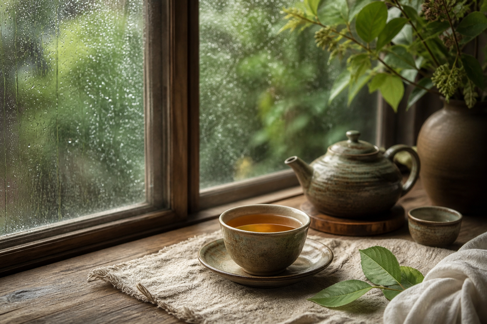
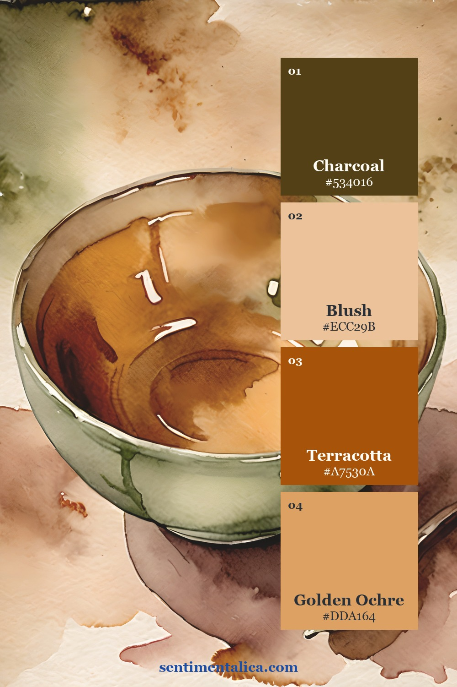
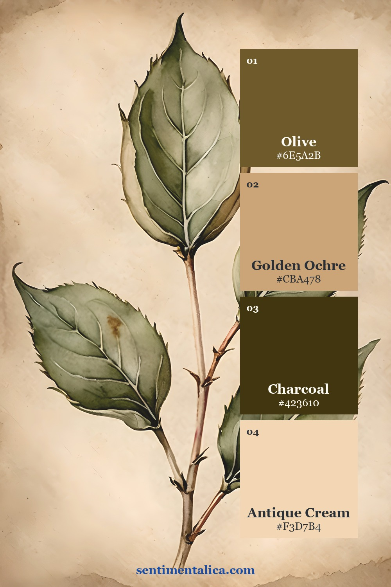
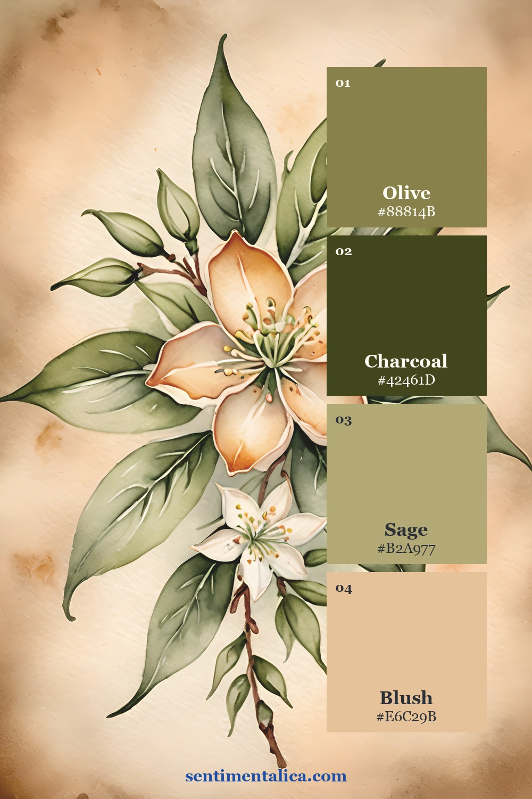
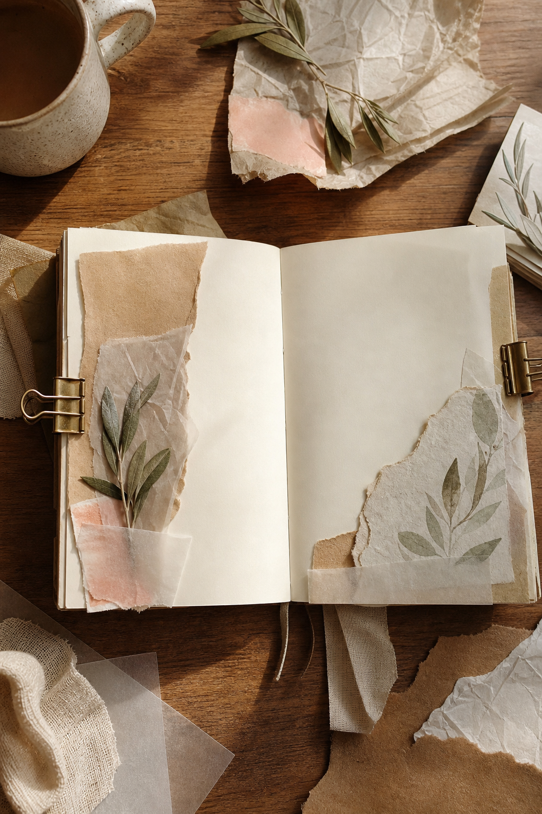
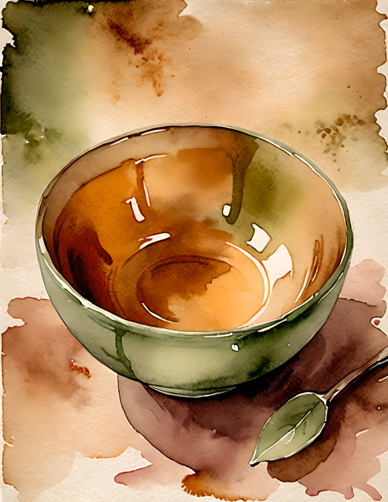
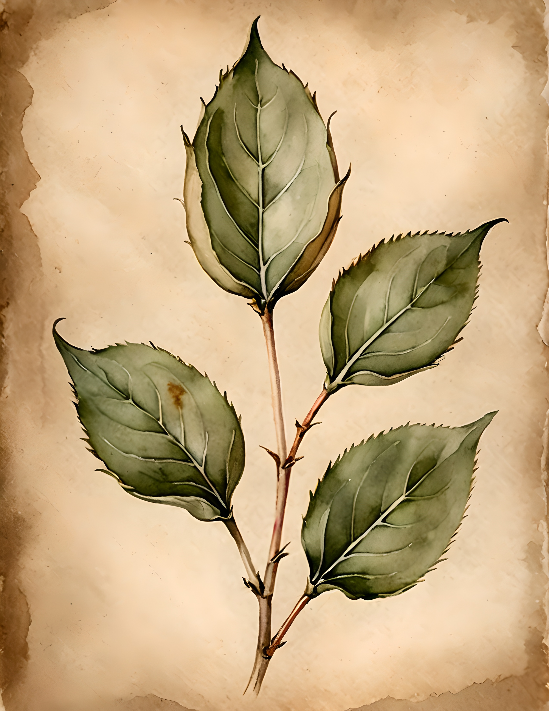
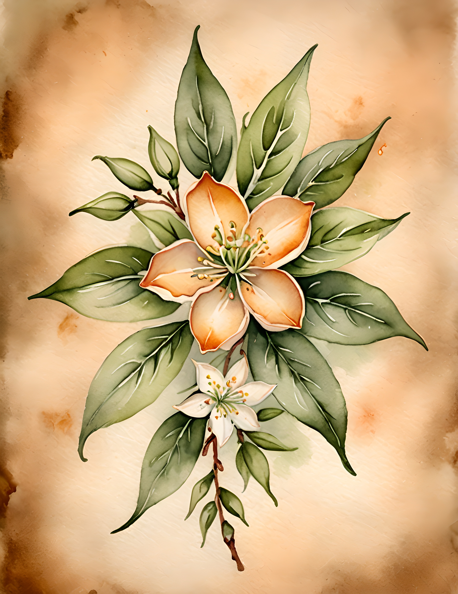

Quiet botanical pages need contrast, but they do not need harsh black. Tea Bloom finds depth in olive leaves and tea-stained brown, then keeps the page light with cream and a measured apricot glow.

Three palettes drawn from real pages
Each card below comes from a different full-size page in the collection. Use the four swatches as a proportion guide: allow the lightest neutral to occupy most of the spread, choose one deep anchor, and repeat the two supporting colors in smaller details.



Choose one anchor before layering
Begin with the darkest swatch in one contained place: an edge, focal image, title strip, or pocket. Add the palest color as breathing room. The middle colors should connect those two extremes rather than appearing in equal blocks everywhere.
For a two-page spread, repeat the anchor color on the opposite page in a much smaller amount. This creates continuity without mirroring the entire layout.

Build the page in a calm order
Lay down a quiet base first. Add one printed focal image, then a torn support layer that repeats a secondary swatch. Finish with a narrow strip, thread, or handwritten label in the accent color. Stop before every shade appears in every cluster.
Study the source pages
These are the real printable pages used for the palette studies. Notice how color changes with subject and background while the collection still feels related.



Use the collection as a starting point
The Tea Bloom printable collection gives you coordinated artwork while leaving room for your own writing, paper scraps, and keepsakes. Print selected pages at a smaller scale for labels and pockets, or use the full image as a strong page foundation. Let the artwork establish the palette, then personalize the surface with materials already in your studio.